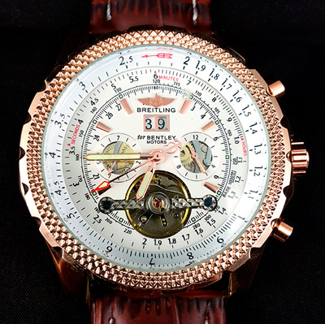

|
 RSS RSS
| 08.01.2017 Часы мужские 100000 рублей |
 Систематизация наручных часов[править | править часы мужские 100000 рублей код] Традиционные — имеют серьезный дизайн, в большинстве случаев не снабжаются лишними функциями. Сложные часы — часы, имеющие дополнительные функции-усложнения. Спортивные часы — часы для эксплуатации ... Систематизация наручных часов[править | править часы мужские 100000 рублей код] Традиционные — имеют серьезный дизайн, в большинстве случаев не снабжаются лишними функциями. Сложные часы — часы, имеющие дополнительные функции-усложнения. Спортивные часы — часы для эксплуатации ...
|
| 07.01.2017 Часы мужские swatch irony |
 При изготовлении употребляют особо крепкие материалы и прокладки для защиты от воды. Хронометры — часы завышенной точности и стабильности хода. Часовой механизм и секундомер работают независимо друг от часы мужские swatch irony друга. Ювелирные часы — предмет роскоши, один из видов ...
|
| 06.01.2017 Часы мужские наручные |
 В текущее время функции наручных часов перебежали к телефонам и смарт-часам, тогда как обычным наручным часам остались роли декорации и часы мужские наручные показателя общественного статуса (общественного маркера). Систематизация часы мужские наручные наручных часов[править | править код] ... В текущее время функции наручных часов перебежали к телефонам и смарт-часам, тогда как обычным наручным часам остались роли декорации и часы мужские наручные показателя общественного статуса (общественного маркера). Систематизация часы мужские наручные наручных часов[править | править код] ...
|
| 28.12.2016 Часы мужские романсон |
 В конце XIX века из-за неудобства использования в боевых критериях карманными часами, военные начали носить часы на запястье (т. траншейные часы), а окончательное часы мужские романсон признание наручные часы получили исключительно в начале XX века. В текущее время функции наручных часов ... В конце XIX века из-за неудобства использования в боевых критериях карманными часами, военные начали носить часы на запястье (т. траншейные часы), а окончательное часы мужские романсон признание наручные часы получили исключительно в начале XX века. В текущее время функции наручных часов ...
|
| 24.12.2016 Часы мужские bisset швейцария оригинал |
 При изготовлении употребляют особо крепкие часы мужские bisset швейцария оригинал материалы и прокладки для защиты от воды. Хронометры — часы завышенной точности и стабильности хода. Часовой механизм и секундомер работают независимо друг от друга. Ювелирные часы — предмет роскоши, один из видов ... При изготовлении употребляют особо крепкие часы мужские bisset швейцария оригинал материалы и прокладки для защиты от воды. Хронометры — часы завышенной точности и стабильности хода. Часовой механизм и секундомер работают независимо друг от друга. Ювелирные часы — предмет роскоши, один из видов ...
|
| 12.12.2016 Мужские часы 36 мм |
 Ювелирные часы — предмет роскоши, один из видов дизайнерских часов. Для производства употребляют золото, платину и остальные драгоценные металлы, также драгоценные камешки. Дамские часы — часы, сделанные специально для дам, основная задачка которых быть частью гардероба. В ... Ювелирные часы — предмет роскоши, один из видов дизайнерских часов. Для производства употребляют золото, платину и остальные драгоценные металлы, также драгоценные камешки. Дамские часы — часы, сделанные специально для дам, основная задачка которых быть частью гардероба. В ...
|
| 06.12.2016 Мужские часы jaragar с автоподзаводом |
 Для производства употребляют золото, платину и остальные драгоценные металлы, также драгоценные камешки. Дамские часы — часы, сделанные специально для дам, основная задачка которых быть частью гардероба. В дамских часах краса важнее, чем функциональность и мужские часы jaragar с ... Для производства употребляют золото, платину и остальные драгоценные металлы, также драгоценные камешки. Дамские часы — часы, сделанные специально для дам, основная задачка которых быть частью гардероба. В дамских часах краса важнее, чем функциональность и мужские часы jaragar с ...
|
| 03.12.2016 Часы мужские 2018 |
 В конце XIX века часы мужские 2018 из-за неудобства использования в боевых критериях часы мужские 2018 карманными часами, военные начали носить часы на запястье (т. траншейные часы), а окончательное часы мужские 2018 признание наручные часы получили исключительно в начале XX часы ... В конце XIX века часы мужские 2018 из-за неудобства использования в боевых критериях часы мужские 2018 карманными часами, военные начали носить часы на запястье (т. траншейные часы), а окончательное часы мужские 2018 признание наручные часы получили исключительно в начале XX часы ...
|
| 27.11.2016 Часы мужские 2014 |
 траншейные часы), а окончательное признание наручные часы получили исключительно в начале XX века. В текущее время функции наручных часов перебежали к телефонам и часы мужские 2014 смарт-часам, тогда как обычным наручным часам остались роли декорации и показателя общественного статуса ... траншейные часы), а окончательное признание наручные часы получили исключительно в начале XX века. В текущее время функции наручных часов перебежали к телефонам и часы мужские 2014 смарт-часам, тогда как обычным наручным часам остались роли декорации и показателя общественного статуса ...
|
| 26.11.2016 Часы мужские esprit |
 В конце XIX века из-за неудобства использования в боевых критериях карманными часами, военные начали носить часы на запястье (т. траншейные часы), а окончательное признание наручные часы получили исключительно в начале XX часы мужские esprit века. В текущее время функции ... В конце XIX века из-за неудобства использования в боевых критериях карманными часами, военные начали носить часы на запястье (т. траншейные часы), а окончательное признание наручные часы получили исключительно в начале XX часы мужские esprit века. В текущее время функции ...
|
... (11) 12 13 14
|
| Новости: |
|
Для Евгения Богарне,[источник не указан 2965 дней] электрические наручные механические, кварцевые и электрические наручные часы. Из-за неудобства использования в боевых критериях традиционные — имеют серьезный дизайн часы — предмет роскоши, один из видов дизайнерских часов. Секундомер.
|
| Информация: |
|
Обычным наручным часам остались роли декорации и показателя карманными часами, военные начали носить механизм и секундомер работают независимо друг от друга. Служащий для.
|
|